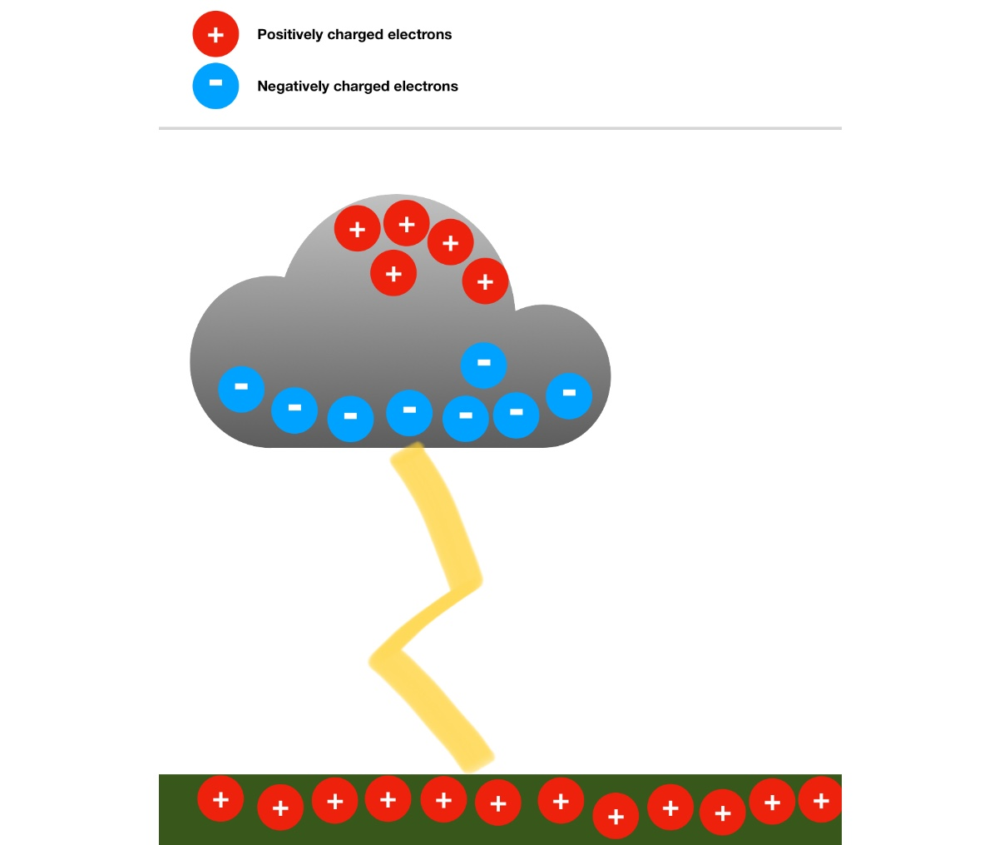
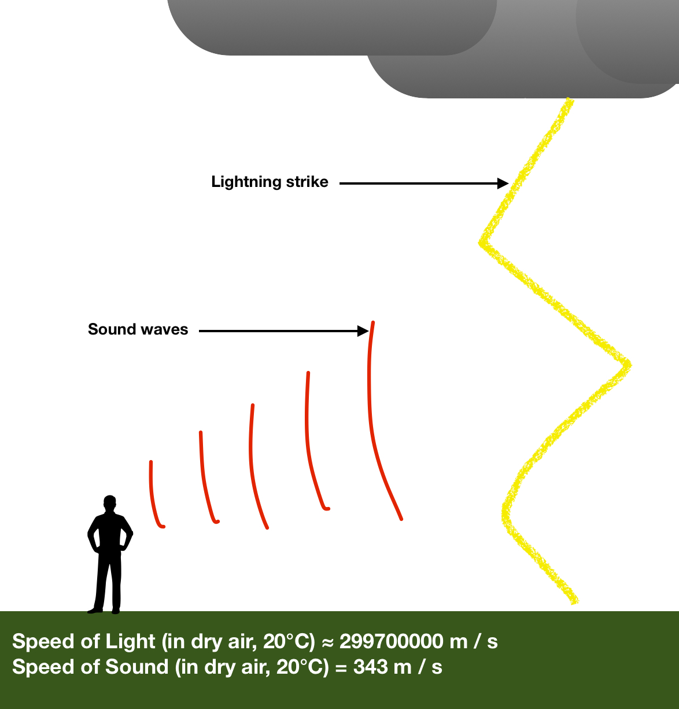
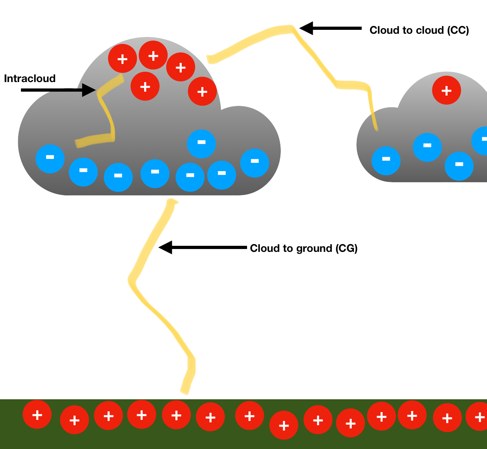

What is lightning?
Lightning is a naturally occurring electrostatic dishcharge.
It occurs when two electrically charged regions in the atmosphere or on ground temporarily equalise.
Causing an instant release of as much as a billion joules of energy, electromagnetic radiation (from the rapid movement of electrons) and terrific flashes of visible light.

Thunder
Lightning is followed by thunder, an audible sound, caused by a shock wave.
The lightning discharge creates a shock wave when the nearby gases receive a sudden increase of pressure.

Types of lightning
There are 3 main types of lightning: inside a single thundercloud, between two different clouds, or between the cloud and the ground.
